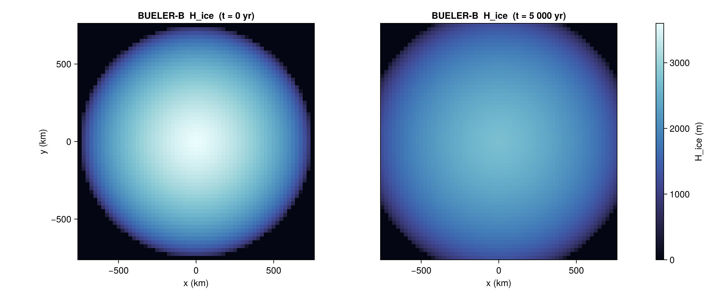
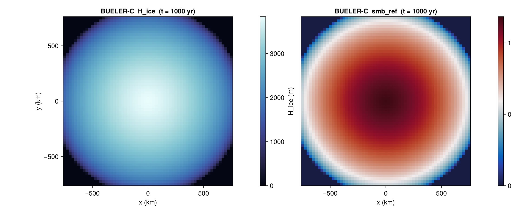

Bueler — Halfar dome
BuelerBenchmark ports the Bueler et al. (2005) isothermal-SIA analytical tests built on the Halfar (1981) similarity solution. The benchmark gives a closed-form ice thickness, surface mass balance, and depth-averaged velocity field at any time t ≥ 0, making it the most rigorous self-consistency check available for an SIA implementation.
Two variants are implemented:
:B— pure decay, no mass-balance forcing (λ = 0).:C— decay with the analytical mass-balance sourcembal = λ H / t(λ > 0, prescribed).
Constructor
BuelerBenchmark(variant::Symbol;
dx_km::Real,
R0_km::Real = 750.0,
H0::Real = 3600.0,
lambda = nothing,
n::Real = 3.0,
A::Real = 1.0e-16,
rho_ice::Real = 910.0,
g::Real = 9.81)The grid is square, centred on the origin, with extent ±R0_km × ±R0_km in metres and Nx = Ny = 2·R0_km/dx_km + 1. The constructor requires 2·R0_km/dx_km to be an integer.
variant = :C requires the lambda keyword; variant = :B rejects it.
Sub-tests
:B — pure Halfar decay
A radially symmetric dome of initial height H0 and radius R0 spreads under SIA gravity-driven flow with no surface mass balance. The analytical thickness follows Bueler 2005 Eqs. 10–11. Closed-form depth-averaged velocity is available via analytical_velocity.
b = BuelerBenchmark(:B; dx_km = 25.0)
s = state(b, 0.0) # initial dome
s_late = state(b, 5_000.0) # after 5 kyr of decay
ux, uy = analytical_velocity(b, 100.0) # m/yr, face-staggered
:C — Halfar with analytical mass balance
Identical geometry, but with a non-zero mass-balance scale λ driving a closed-form source mbal = λ H / t. Tests the SIA solver's response to a non-trivial surface forcing whose analytical solution is known.
b = BuelerBenchmark(:C; dx_km = 25.0, lambda = 5.0)
s = state(b, 1_000.0)
# s.H_ice and s.smb_ref both analytical
Helpers
IceSheetBenchmarks.BuelerBenchmark — Type
BuelerBenchmark(variant::Symbol; dx_km, R0_km=750.0, H0=3600.0,
lambda=nothing, n=3.0, A=1e-16, rho_ice=910.0, g=9.81)Halfar dome benchmark (Bueler et al. 2005). variant:
:B— pure Halfar decay (no mass balance,λ = 0). The default.:C— Halfar + analytical mass balancembal = λ H / t. Requireslambdato be passed explicitly.
dx_km is the cell width in km; the grid is square and centered on the dome with Nx = Ny = 2 R0_km / dx_km + 1 points spanning [-R0_km e3, +R0_km e3] in metres.
Other physical constants default to the Yelmo Fortran defaults from yelmo_benchmarks.f90:233-238.
IceSheetBenchmarks.bueler_gamma — Function
bueler_gamma(A, n, rho_ice, g) -> γSIA flow prefactor γ = 2 A (ρ_i g)^n / (n + 2). With Yelmo defaults (A = 1e-16 Pa⁻³ yr⁻¹, n = 3, ρ_i = 910, g = 9.81) this gives γ ≈ 2.84 × 10⁻² m⁻³ yr⁻¹ (Bueler et al. 2005 default).
IceSheetBenchmarks.bueler_test_BC! — Function
bueler_test_BC!(H_ice, mbal, xc, yc, time;
R0=750.0, H0=3600.0, lambda=0.0,
n=3.0, A=1e-16, rho_ice=910.0, g=9.81)Halfar similarity solution for the isothermal-SIA dome. Mutates H_ice (m) and mbal (m/yr) in-place at every (xc[i], yc[j]) point.
H_ice and mbal must be 2D arrays of size (length(xc), length(yc)). xc and yc are cell-centre coordinates in metres.
time is the elapsed time after the analytical reference (t = 0 corresponds to the initial dome at the start of the simulation, not an absolute Halfar t₀). The internal t₀ shift is added inside the formula via the (R0, H0) dome scale.
lambda = 0 reproduces BUELER-B (pure Halfar decay, no mass balance). lambda > 0 reproduces BUELER-C (with analytical mbal = λ H / t).
Port of yelmo/tests/ice_benchmarks.f90:167 bueler_test_BC.
References
- Bueler, E., Lingle, C. S., Kallen-Brown, J. A., Covey, D. N. and Bowman, L. N. (2005). Exact solutions and verification of numerical models for isothermal ice sheets. J. Glaciol., 51(173), 291–306.
- Halfar, P. (1981). On the dynamics of the ice sheets. J. Geophys. Res., 86(C11), 11065–11072.